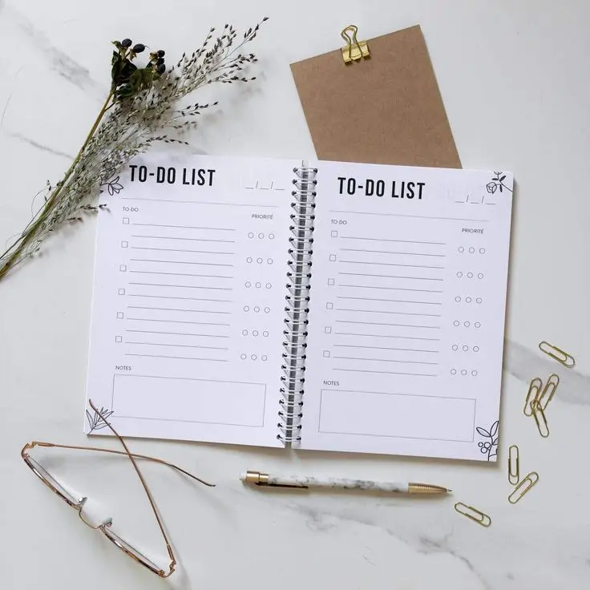
Le mariage, un événement sacré où deux âmes se lient pour l’éternité, est une étape monumentale dans la vie de tout couple. Cependant, derrière la splendeur des robes de mariée et la féérie des décorations de la réception, se cache un travail d’organisation considérable. Pour éviter le stress et garantir le succès de cette journée mémorable, une liste de tâches, aussi appelée « To do list », s’avère être un outil indispensable. Dans cet article, nous allons explorer en profondeur les éléments essentiels à inclure dans une To-Do List de mariage pour vous aider à planifier cet événement extraordinaire sans encombre.
L'importance d'une to do list
Le mariage est un événement complexe, impliquant de nombreux détails et préparatifs. C’est pourquoi une liste de tâches est essentielle pour garder une trace de toutes les étapes nécessaires à la planification. En gardant une liste organisée, vous pouvez vous assurer que rien n’est oublié et que tout se déroule comme prévu le jour J.
Etablir une liste complète
Pour commencer, il est crucial d’établir une liste exhaustive de toutes les tâches à accomplir. Cela inclut la réservation du lieu de la cérémonie et de la réception, la sélection des fournisseurs tels que le traiteur, le photographe, le DJ ou l’orchestre, ainsi que la gestion des invitations et de l’hébergement pour les invités. En gardant à l’esprit les mots-clés comme « mariage », « liste », « invités », et « organisation », vous pouvez structurer votre To-Do List de manière efficace et organisée.
L'événement
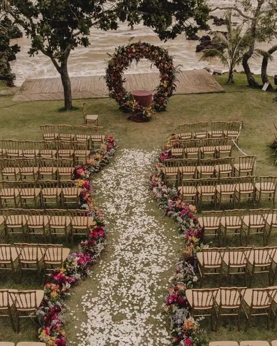
Comment organiser une cérémonie
La cérémonie est l'un des aspects les plus significatifs du mariage, où les vœux sont échangés et les engagements sont scellés. Assurez-vous de consacrer du temps à la planification de cet événement précieux. Cela implique de choisir le lieu de la cérémonie, de décider du type de cérémonie (religieuse, civile, laïque), et de coordonner avec le célébrant ou l'officiant. Gardez "cérémonie" à l'avant-plan de votre To-Do List pour ne rien laisser au hasard.
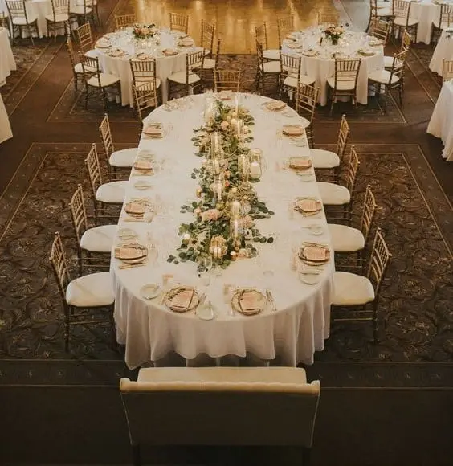
Comment organiser une réception
Après la cérémonie, la réception offre l'occasion de célébrer avec famille et amis. Choisissez un lieu qui correspond à votre vision et votre budget, et travaillez avec le responsable de la salle pour organiser les détails logistiques tels que la décoration, le repas et le divertissement. Inscrivez "réception" sur votre To-Do List pour suivre toutes les étapes de planification nécessaires à la réalisation de cette partie cruciale de votre journée.
Petit conseil pour choisir une robe
La robe de mariée est souvent l'un des éléments les plus mémorables du mariage. Avec autant d'options disponibles, il est important de commencer tôt votre recherche.Planifiez des essayages dans différentes boutiques de mariée et prenez en compte les délais de livraison et d'ajustement. Gardez "robe" sur votre To-Do List pour vous assurer de trouver la tenue parfaite pour votre jour spécial.
Alexandra Ambert
Les invités
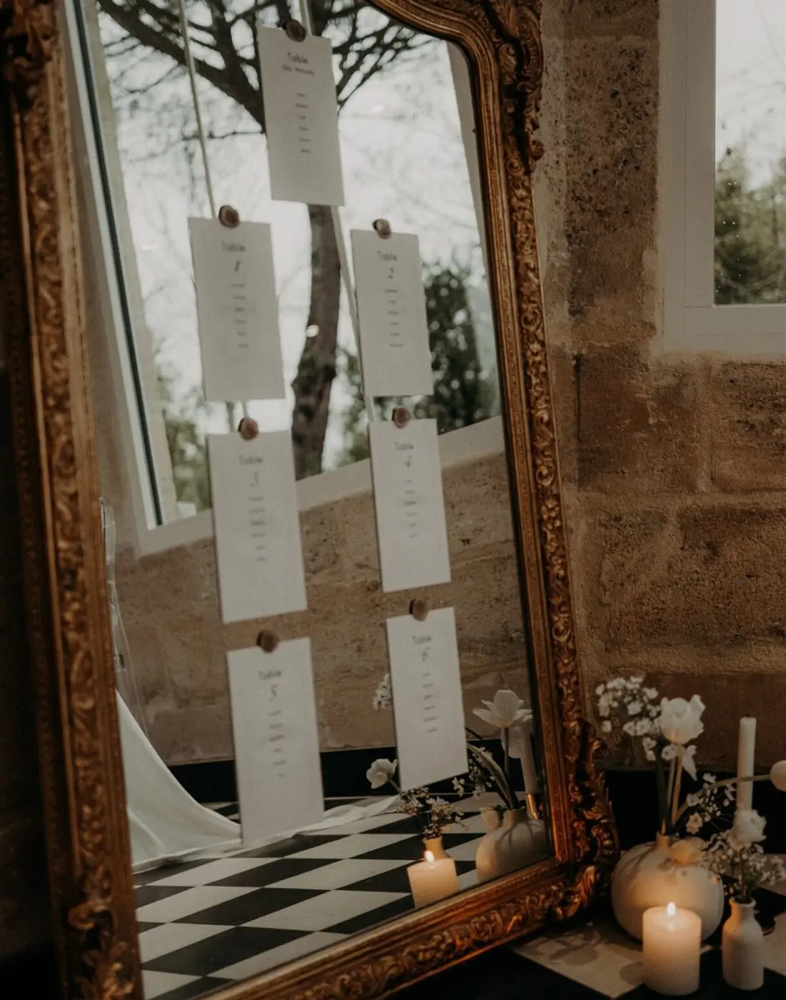
Gérer la liste des invités : qui inviter ?
La liste des invités est l'un des aspects les plus délicats de la planification d'un mariage. Commencez par établir une liste préliminaire en consultant les familles et en déterminant le nombre d'invités que vous pouvez accueillir.Ensuite, envoyez les invitations suffisamment à l'avance pour permettre aux invités de planifier leur présence. Assurez-vous d'utiliser "invités" dans votre To-Do List pour vous aider à suivre les RSVP et à finaliser les détails de l'hébergement et du transport pour les invités venant de loin.
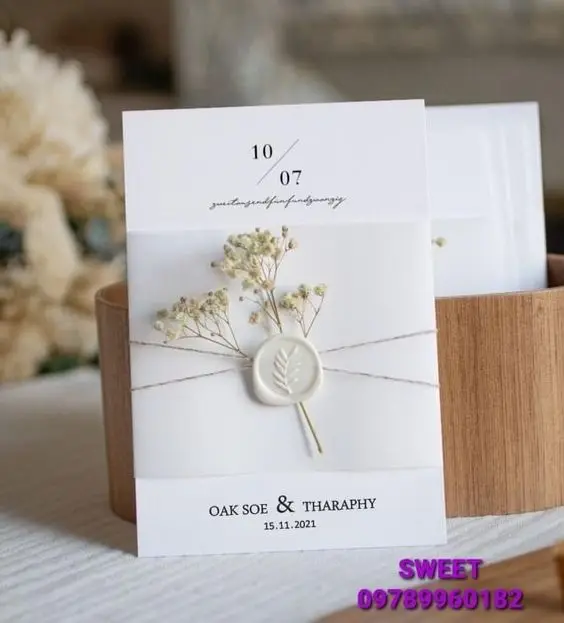
Papeterie de Mariage : Des Invitations Qui Éblouissent
Les invitations de mariage sont la première impression que vos invités auront de votre grand jour, alors assurez-vous qu'elles soient mémorables. Choisissez un design qui reflète votre style personnel et l'esthétique de votre mariage. N'oubliez pas d'inclure toutes les informations importantes telles que la date, l'heure, le lieu et les détails RSVP. Gardez "papeterie" sur votre To-Do List pour vous assurer que tout est prêt à temps pour l'envoi.
L'art de l'organisation
Enfin, l’organisation est la clé du succès pour planifier un mariage sans stress. Utilisez des outils tels que des calendriers, des tableaux de bord et des applications de planification de mariage pour rester organisé et sur la bonne voie. Réservez régulièrement du temps pour mettre à jour votre To-Do List et vérifier les progrès réalisés dans la planification de votre mariage.
Tout ce qu'il faut savoir sur le gâteau de mariage
Le gâteau de mariage est une tradition incontournable qui mérite une attention particulière. Rencontrez plusieurs pâtissiers pour déguster des échantillons de gâteaux et discuter des options de design. Assurez-vous de prendre en compte les préférences alimentaires de vos invités lors du choix des saveurs et des garnitures. Inscrivez « gâteau » sur votre To-Do List pour garantir que ce délice sucré soit à la hauteur de vos attentes le jour J.
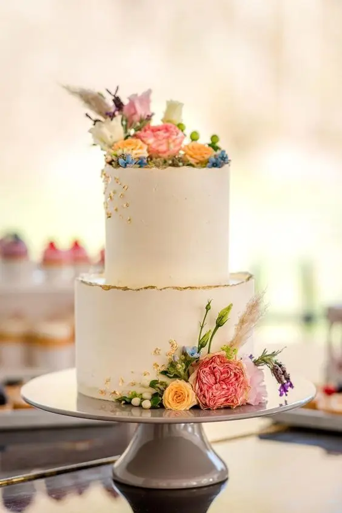
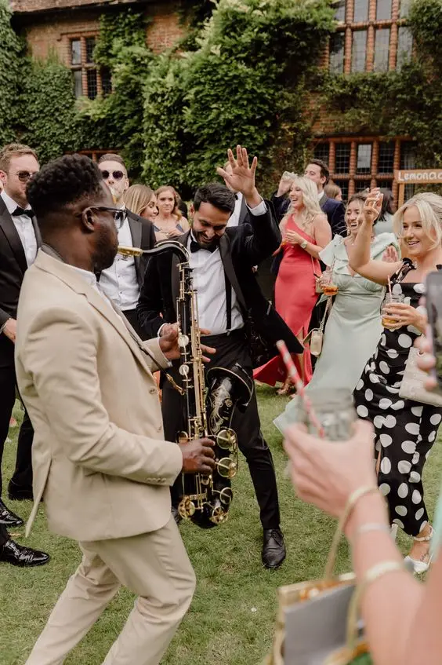
Une ambiance à la pointe de la qualité
La musique joue un rôle crucial dans la création de l’ambiance de votre mariage. Que vous optiez pour un DJ ou un groupe live, assurez-vous de choisir des musiciens professionnels capables de créer une atmosphère magique. Sélectionnez une playlist variée qui plaira à tous vos invités et incluez des chansons spéciales pour les moments clés tels que la première danse et la coupe du gâteau. Gardez « musique » sur votre To-Do List pour coordonner tous les détails avec vos prestataires.
Embellir ce jour unique
Les fleurs ajoutent une touche de fraîcheur et d’élégance à toute cérémonie de mariage. Que ce soit pour le bouquet de la mariée, les arrangements floraux de l’autel ou les décorations de table, choisir les bonnes fleurs est essentiel. Consultez un fleuriste professionnel pour obtenir des conseils sur les variétés de fleurs qui correspondent à votre thème et à votre budget. Intégrez « fleurs » à votre To-Do List pour ne pas négliger cet aspect crucial de la décoration de votre mariage.
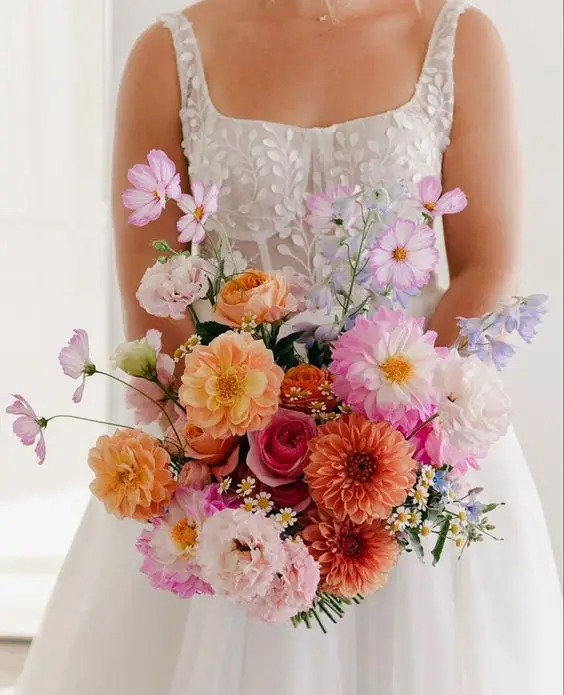
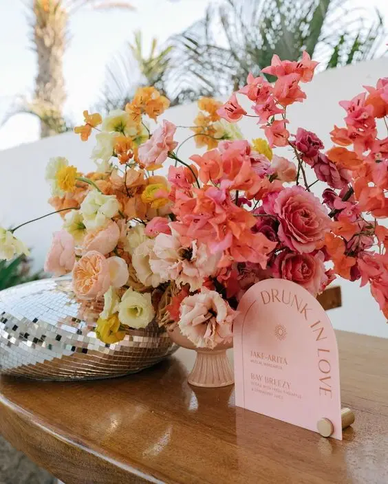
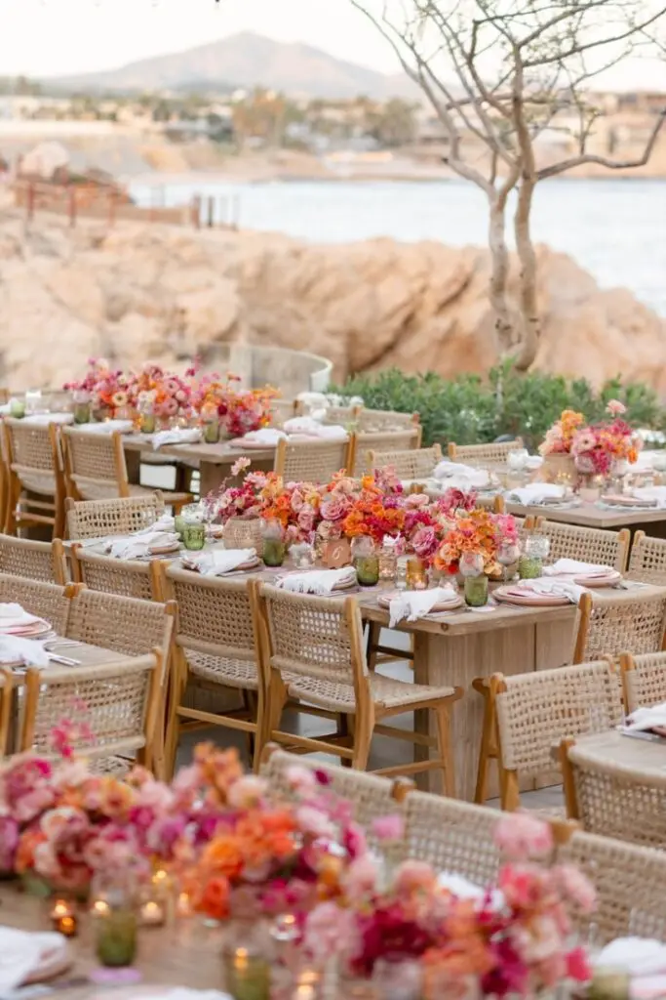
Les détails financiers
Le budget est un aspect essentiel de la planification d’un mariage réussi. Tenez-vous-en à une liste détaillée des dépenses prévues et suivez de près toutes les transactions financières liées à votre mariage. N’oubliez pas de prévoir une marge de manœuvre pour les imprévus et les dépassements éventuels. Inscrivez « budget » sur votre To-Do List pour vous assurer que vos finances restent sous contrôle tout au long du processus de planification.
Le plan B
Enfin, malgré toute votre planification minutieuse, il est important de se préparer à l’imprévu. Élaborez un plan de secours pour faire face à d’éventuels problèmes tels que la météo défavorable, les retards des fournisseurs ou les urgences médicales. Gardez « plan B » sur votre To-Do List pour vous assurer que vous êtes prêt à gérer toutes les éventualités et à garantir le bon déroulement de votre journée spéciale.
En somme, une To-Do List complète et bien organisée est la clé d’un mariage réussi. En incluant tous les aspects essentiels tels que la cérémonie, la réception, la robe, la gestion des invités et les détails logistiques, vous pouvez planifier votre mariage avec confiance et sérénité. Alors, commencez dès maintenant à créer votre propre To-Do List et préparez-vous à vivre le mariage de vos rêves !

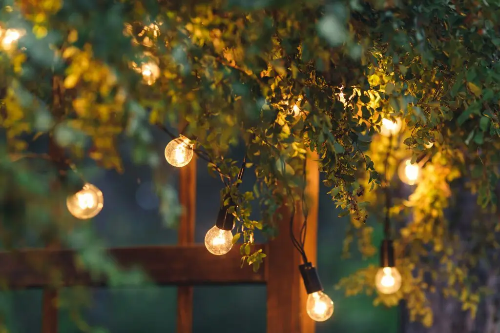
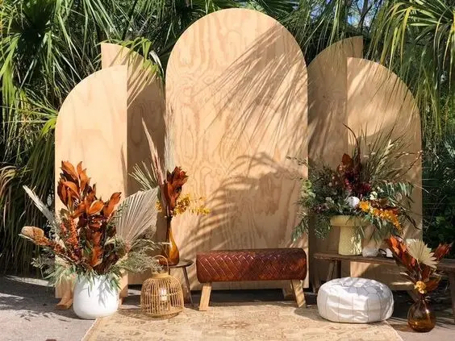
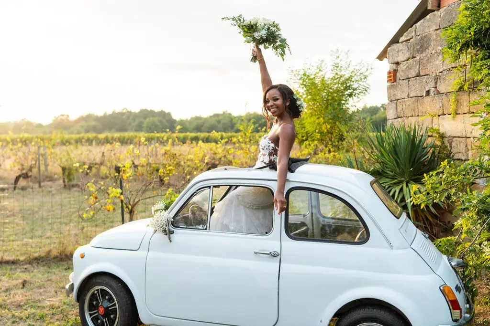
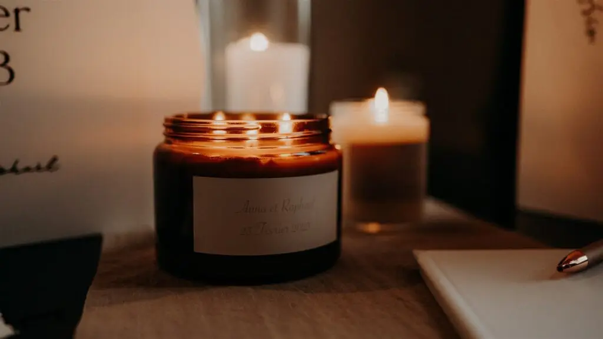
Astuces pour une organisation de Mariage sans Stress
Planifier un mariage peut être une tâche monumentale, mais avec les bonnes astuces, vous pouvez rendre le processus aussi fluide que possible. Voici quelques conseils pratiques pour vous aider à organiser votre mariage sans stress :
- Commencez tôt : La planification d'un mariage demande du temps, alors commencez dès que possible. Plus vous vous y prendrez tôt, plus vous aurez de temps pour prendre des décisions réfléchies et éviter les précipitations de dernière minute.
- Établissez un budget réaliste : Avant de commencer à planifier, déterminez combien vous pouvez vous permettre de dépenser pour votre mariage. Cela vous aidera à prioriser vos dépenses et à éviter les tentations de dépasser votre budget.
- Restez organisé : Utilisez une To-Do List détaillée pour suivre toutes les tâches à accomplir et les échéances à respecter. Vous pouvez utiliser des applications de planification de mariage ou simplement un cahier et un stylo pour garder une trace de tout.
- Demandez de l'aide : Ne soyez pas timide pour demander de l'aide à votre famille et à vos amis. Ils seront probablement ravis de contribuer à rendre votre journée spéciale encore plus mémorable.
- Restez flexible : Malgré tous vos efforts de planification, il est possible que des imprévus surviennent. Apprenez à être flexible et à faire preuve de créativité pour résoudre les problèmes qui pourraient survenir.
- Priorisez ce qui est important pour vous : Chaque couple a des priorités différentes pour leur mariage. Que ce soit la nourriture, la musique, la décoration ou autre chose, assurez-vous de concentrer vos ressources sur ce qui compte le plus pour vous.
- Prenez du temps pour vous : La planification d'un mariage peut être stressante, mais n'oubliez pas de prendre du temps pour vous détendre et vous reposer. Prenez soin de votre bien-être physique et émotionnel pour rester en forme tout au long du processus.
- Soyez prêt à déléguer : Vous n'avez pas à tout faire vous-même. Confiez certaines tâches à des professionnels ou à des proches de confiance pour alléger votre charge de travail. En suivant ces astuces simples, vous serez bien équipé pour planifier un mariage inoubliable sans le stress qui l'accompagne souvent. Gardez à l'esprit que l'important est de célébrer votre amour avec vos proches, peu importe les petits accrocs qui pourraient survenir en cours de route.
- Engager un wedding planner est bénéfique pour plusieurs raisons. Un professionnel expérimenté en organisation de mariages peut vous aider à naviguer les innombrables détails et décisions à prendre, réduisant ainsi le stress et les soucis liés à la planification. Il possède des connaissances approfondies sur les fournisseurs locaux, les tendances actuelles et les meilleures pratiques, ce qui peut vous faire économiser du temps et de l'argent. De plus, un wedding planner coordonne le jour J, assurant que tout se déroule sans accroc, vous permettant ainsi de profiter pleinement de chaque moment de votre journée spéciale sans préoccupations logistiques.
- En suivant ces astuces simples, vous serez bien équipé pour planifier un mariage inoubliable sans le stress qui l'accompagne souvent. Gardez à l'esprit que l'important est de célébrer votre amour avec vos proches, peu importe les petits accrocs qui pourraient survenir en cours de route.
- En conclusion, une To-Do List de mariage bien planifiée est un outil précieux pour garantir que votre journée spéciale se déroule sans accroc. En gardant à l'esprit les éléments essentiels tels que la cérémonie, la réception, la robe et la gestion de la liste des invités, vous pouvez planifier votre mariage de manière efficace et organisée. Alors, prenez votre stylo et votre papier, et commencez à élaborer votre To-Do List dès aujourd'hui !